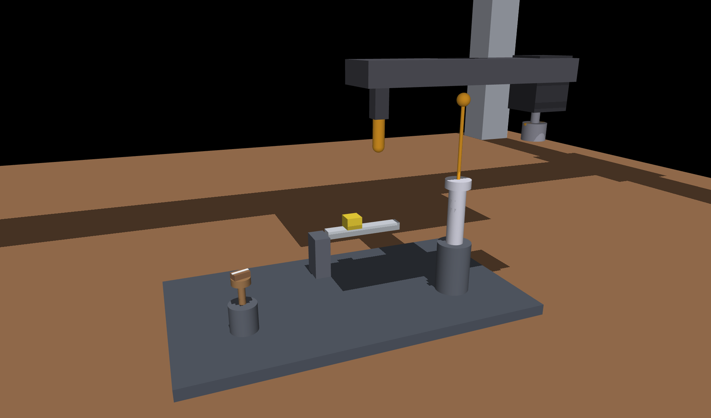
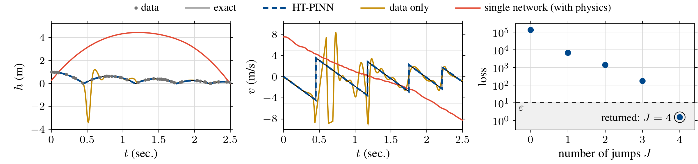
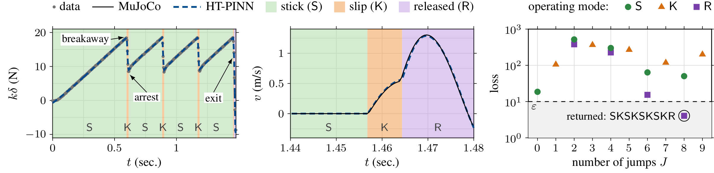

Hybrid-time PINNs: Discontinuity-Aware Physics-Informed Neural Networks for Learning Hybrid Dynamical Systems
Demonstration Video
Code
Abstract
Hybrid dynamical systems evolve smoothly but jump at discrete events, such as contacts and impacts in robotics. High-fidelity physics-based simulations of these systems are often too slow for real-time use. We develop surrogate models that combine neural networks with the known physics of the hybrid system. Discontinuity-aware physics-informed neural networks (DA-PINNs) use one network for each smooth segment between jumps and learn, together with the networks, the jump times, the sequence of operating modes and the physical parameters. On a bouncing ball, whose exact solution is known, DA-PINNs find the number and the times of the impacts and the restitution coefficient. We also apply them to robotic disassembly, with MuJoCo as the high-fidelity simulator: a robot pulls a press-fitted pin out of a housing through a compliant tool, and the pin sticks and slips several times before it is released. DA-PINNs find the number and the sequence of these events, including whether each slip ends in an arrest or in the release of the pin, and the static and kinetic friction coefficients within 2%.
Contributions
- We propose DA-PINNs, which place one neural network on each flow interval of a hybrid system and train the networks, the jump times and the physical parameters together on the data and on the flow, guard and reset conditions of the known physics.
- We give an algorithm that selects the number of jumps and the guard that triggers each jump, so that the surrogate also recovers the sequence of operating modes.
- On a bouncing ball and on the extraction of a press-fitted pin by a robot simulated in MuJoCo, DA-PINNs recover the events and the parameters that govern them: the restitution of the ball within 0.1%, and the static and kinetic friction of the press fit within 2%.
Methodology

MuJoCo Cell
A gantry robot pulls a press-fitted pin through a series-elastic puller.



Results
Bouncing Ball
Four impacts found for every noise seed; restitution within 0.1%.


Robotic Pin Extraction
Mode sequence SKSKSKSKR recovered; friction coefficients within 2%.
